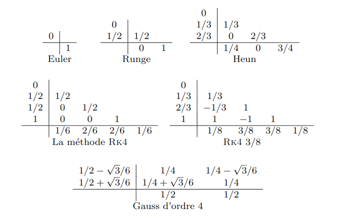
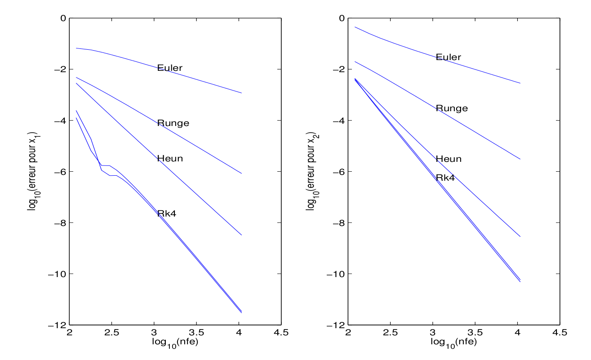
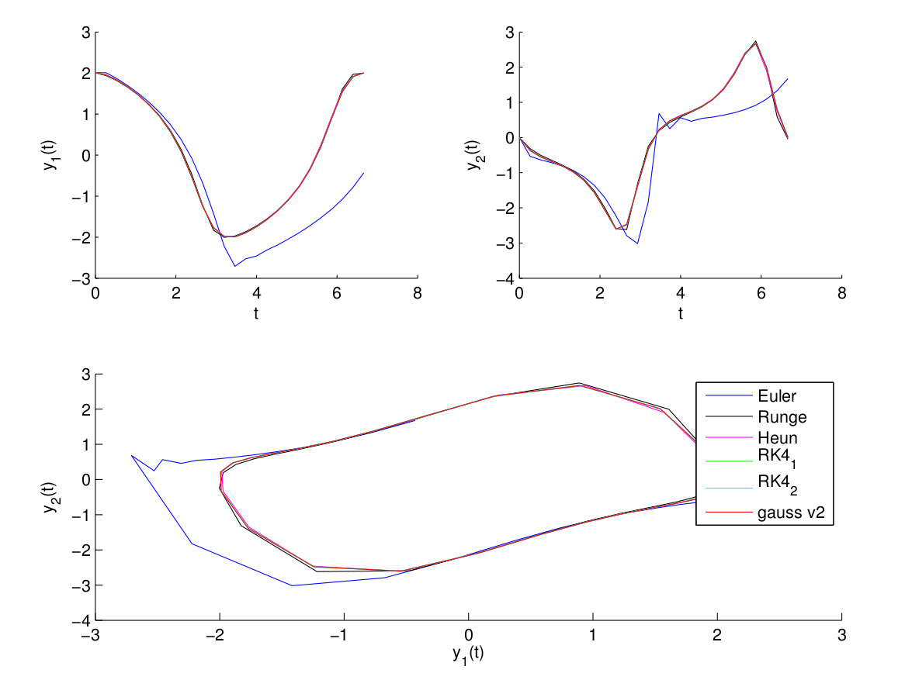

Sujet TP ordre
Introduction
Il est rappelé que les programmes doivent respecter les bonnes pratiques de la programmation. En particulier on vérifiera que les interfaces soient bien définies (paramètres en entrée, en sortie avec leurs types, les dimensions,...). Dans le cas contraire on mettra des points négatifs pour un maximum de 4 points.$\\$
On trouvera une version pdf de ce document à cette adresse.$\\$
L’objectif de ce projet est de réaliser les graphiques de la figure 1 concernant l’ordre qui seront compl ́et ́es avec les résultats obtenus pour le schéma implicite de Gauß à 2 ́etages (cf. cours sur les schémas implicites)$\\$
Rappels
Schémas de Runge-Kutta
On rappelle les schémas classiques


FIGURE 1- Erreur globale en fonction du nombre d'évaluations, E. Hairer, S.P. Nørsett and G. Wanner, Tome I, page 140, $\log _{10}(err)=C_{1}- p \log _{10}(n p h i)$
Travail demandé
Ordre
L'équation différentielle considérée est l'équation de Van der Pol
$(I V P) \left\{\begin{array}{l}\dot{y}_{1}(t)=y_{2}(t) \\ \dot{y}_{2}(t)=\left(1-y_{1}^{2}(t)\right) y_{2}(t)-y_{1}(t) \\ y_{1}(0)=2.00861986087484313650940188 \\ y_{2}(0)=0 \end{array}\right.\\$
$t_{f}$=T=6.6632868593231301896996820305 $\\$
La solution de ce problème de Cauchy est périodique de période $T. \\$
Les programmes seront effectués en Julia. On demande que les appels aux sous-programmes se fassent ainsi :
Pour les schémas explicites: T,Y = ode_euler(phi, [t0 tf], y0, N) où T est un vecteur colonne de longueur N+1 et Y est de dimension (N+1, n).
Pour le schéma implicite de Gauß : T, Y, nphi, ifail = ode_gauss_fp(phi,[t0 tf], y0, options) respectivement T, Y, nphi, ifail = ode_gauss newton(phi, [t0 tf], y0, options)) pour la version point fixe (respectivement Newton) avec
- options[1] = N
- options[2] = nb_itmax , nombre d'itérations maximum pour le point fixe
- options[3] = f_eps, $\varepsilon$ pour le test d'arrêt pour le point fixe
- nphi = nombre d'évaluations du second membre de l'équation différentielle
- ifail[i] =nombre d'itérations si le point fixe a convergé pour l'intervalle $[t_{i-1}, t_{i}]$ et -1 sinon.
L'interface pour la fonction phi sera: ypoint = phi(t, y)
Les programmes d’intégration numérique par les méthodes explicites ne devront comporter qu’une seule boucle.
On demande pour cette équation:
- de réaliser les graphique de la figure 2 qui tracent les deux composantes de la solution et le plan de phase pour N=25 . Pour Gauß on prendra nb_itmax=15 et f_eps=1.e-12.
On fera 2 versions pour Gauß : une version point fixe et une version Newton.
- de réaliser les graphiques de la figure 1 Pour les schémas explicites on mettra en abscisse le vecteur (en notation Julia) $\log_{10}$([120:60:1080 1200:600:10800]). On rajoutera sur ces graphiques les résultats obtenus pour le schéma implicite de Gauß en prenant comme nombre de pas le vecteur [120:60:1080 1200:600:10800] / 4 et comme valeurs pour les paramètres nbitmax=15 et f\eps=1.e-12
- On fera une deuxième figure avec les résultats correspondant au schéma implicite de Gauß pour
- nb_itmax=15 et f_eps=1.e-12
- nb_itmax=2 et f_eps=1.e-12
- nb_itmax=15 et f_eps=1.e-6
Rendu
Le travail en TP est individuel. Deux tests seront effectués, le premier lors du deuxième TP, le deuxième lors de dernière séance de TP. Le rendu définitif est à rendre le soir du dernier TP contiendra :
- les graphiques obtenus au format pdf ; les sources des programmes qui seront mis dans un répertoire < noms >. le fichier contenant l'archive (< noms >.tar), sera envoyé à votre enseignant en TP (gergaud@enseeiht.fr ou damien.goubinat@enseeiht.fr).
Dans le courriel vous mentionnerez le nom du fichier Julia permettant d’obtenir les courbes résultats.
Résultats
On trouveras aussi ci-après les figures des solutions pour N=25 pas.

Figure 2- Solution de l’équation de Van der Pol, composante 1 et 2 et plan de phase, pour les schémas de Runge-Kutta avec N = 25, pour Gauß nb itmax = 15 et f_eps = 1.e-12.